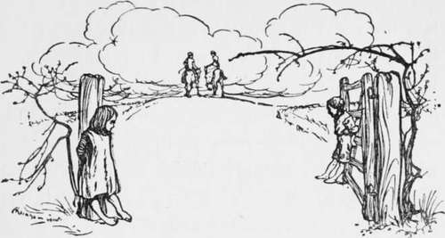

The Farmer. Continued
Description
This section is from the book "Hunting: A Manual of Fox, Hare, Stag & Otter Hunting", by J. Otho Paget. Also available from Amazon: Hunting: A Manual of Fox, Hare, Stag & Otter Hunting.
The Farmer. Continued
I need hardly say that your hand should be ever ready to go into your pocket when it is a question of local charities or some institution that interests the farmers of the district within which you hunt.
The question of buying forage from the farmer has never yet had a satisfactory solution, and though many ideas have been suggested, nothing has been found that will work well. If you know something about hay and corn, by all means go and buy it yourself from the farmer, but do not put your trust in your groom ; and pay the cheque yourself.
Supposing that you are quite ignorant of quality and value in forage, you had best go to the local dealer, but insist that what he supplies you with has been grown in the neighbourhood. When you engage your groom, stipulate that he is to have no perquisites in the way of commission, and always pay your corn-bills promptly yourself. If your hunting-quarters are in the country and not in the town, you will have better opportunities for buying forage direct from the farmers. Never try to bargain with a farmer if you do not know the value of the stuff you are trying to buy. The best plan, if you will only give yourself a little trouble and you want to buy oats from a farmer, is to get his sample and submit it to the inspection of one or two other farmers ; then if the quality-is good you can offer a shilling a quarter more than market price. Hay is not so easy to arrange. In the first place, if you buy in the stack it is very difficult to ascertain the quality, and many farmers are very careless in their methods of making hay. I think the best way is to have a cutting made into the stack, then, if the interior is of a bright colour and smells sweet, you can give rather more than the market price and have it delivered at your stables. The cost of cutting, trussing, and delivering, say two miles, would be about ten shillings, and a little more may be added to the price for only inside trusses. Unless, however, your balance at the bank permits you to pay ready money, do not purchase forage from the farmer, or you will do more harm than good. By giving a shade more than market price the farmer will get that little profit which would go into the dealer's pockets. Of course you must not buy any forage out of the country if it is possible to procure any in the neighbourhood.
The middleman is, I am sorry to say, a necessity in most of a farmer's transactions with the fox-hunter. Few farmers can afford to wait for their money after the corn is sold, and still less even afford to keep their oats for eighteen months. The majority of men who hunt in a fashionable country do not buy any forage until the last moment, when they must have old hay and old oats. The dealer knows there will be this demand in the autumn and lays in a stock during the spring or summer, whenever the farmer wishes to sell. The price, in the meantime, through a heavy crop or other causes, may go down, and the dealer is obliged to charge something for the risk he runs ; but I don't think the farmer grudges him his fair profit on the outlay of money and for his trouble.
It is very unfair to blame the dealers: they are business men and naturally want to make a living ; besides, they buy the farmers' wheat and other grain which are useless to a fox-hunter.
What the farmer wants is that all forage used in the hunting-stables should be grown in the neighbourhood, and not imported from other counties. Considering that the farmer gets nothing for allowing his land to be ridden over, I think this is the very least we can do for him.
The question then arises, how is it to be worked ? I have already pointed out that buying direct from the producer is in most cases not possible. The only solution of the difficulty which I can see is for the masters of hounds to have a written agreement with the local dealers to this effect, that all hay, oats, or straw supplied by them to hunting-men shall have been bought and grown in the neighbourhood. The name and address of the farmer to be given when required. In order to make this plan work, it would have to be an understood thing that any hunting-man wishing to buy forage from a dealer, should first ask the M. F. H. with whom he might deal. This would put a power in the hands of the master which would enable him to make terms with the dealer, and if one refused to submit, he would simply lose the custom of every man hunting in the district. I am afraid this system would add yet another burden to the master's already overweighted shoulders, but when once fairly started I do not think it would entail much trouble.
Some such plan as this will be found necessary before long, but until the day arrives, each individual fox-hunter must do his best to ascertain that everything consumed in his stable has been grown on land near which he hunts. Roughly speaking, a horse requires about six quarters of oats for the season, and if you pay a shilling a quarter more than the market price, it only amounts to six shillings per horse, which I think you would not grudge paying for the privilege of riding over the land. A farmer would be very pleased with that extra shilling a quarter, and would then see some advantage in hunting, but I advise you to make him understand at the same time that you know the market price. Some men leave all these transactions to the groom, to save themselves trouble, and I have already said this is not right ; but even if they allow the groom to do the ordering, they certainly ought not to give him the money to pay. There are, I know, a great many honest and conscientious grooms, but it is putting an unfair temptation in the men's way.'
When the honest groom accepts a present from the farmer or dealer who supplies his master with forage, he has no intention of passing any inferior stuff into the stable, and he thinks he is taking only what custom entitles him to receive. Let him, however, beware, for this is the first downward step towards dishonesty. No man can serve two masters, and that is what the groom attempts to do when he takes a present from his employer's forage-dealer. The most conscientious groom may hesitate to return forage when the man who sent it has given him a handsome present; but, of course, this practice puts in the hands of a dishonest groom an easy way of robbing his master and blackmailing the dealer.
If stud-grooms would form a union and make it a rule that no member should receive presents from any one supplying his master with goods, they could easily command an increase in wages that would more than compensate them for the loss of perquisites.
I regret to say the custom of receiving commission is not confined only to grooms. My idea is that a thing is either honest or dishonest, and that there is no debatable ground between. I consider it perfectly fair and honest to receive commission from a man when you are acting solely in his interest, but to take commission from one man when you are acting on behalf of the other party to the deal, is dishonest and dishonourable.
I always think it is absurd to speak of any class of men as a group and label the lot as possessing the same good or bad qualities, whether they be farmers, landowners, or tradesmen. The class may have some points in common which distinguish them from other classes, but these are generally few. Each man has his own peculiarities of character, and he will not alter them merely by becoming a farmer or a grocer. Taking them as a whole, I should say farmers are a very straightforward body of men, but to say there are no exceptions would be as ridiculous as saying all tradesmen were dishonest, because one was found guilty of putting sand in his sugar. One farmer may sell you hay as good, which you find is quite unfit to give horses, but that is no reason why you should never purchase forage from other farmers. Of course, if you pit your knowledge against his and drive a bargain, you have only yourself to thank, if you get the worst of the deal.
In the matter of poultry-claims, I am sorry to say there are some farmers dishonest enough to send in bills for fowls which they have killed themselves or even never possessed. Because there are black sheep in the fold, there is no reason you should look on every claim with suspicion.
Better to pay smilingly a dozen unjust claims, than to cast a slur on the character of one honest man by doubting his word. It frequently happens a farmer of the right sort will have lost poultry by foxes for several years in small numbers, and yet has never sent in a bill to the hunt. Then comes a time when a vixen, with perhaps cubs laid up in a field adjoining, ravages his hen-roost daily, until at last his wife insists on having compensation, as the poultry and their profit usually belong to her privy purse. The farmer does not like sending in a claim, never has done it, and doesn't like doing it now ; but, like all good men, he must give in to his better-half. Then if that claim is met with hesitation and doubt, the farmer is very naturally indignant that he should be thought dishonest, and a good friend to hunting is at once converted into a bitter enemy.
Turned-down foxes and those that are affected with the mange are generally the greatest culprits, but the wild healthy ones get into bad habits sometimes, and I have often known twenty fowls killed in a night. I think in these instances he kills just for the sport, as there are never more than one or two fowls carried away.

Continue to: